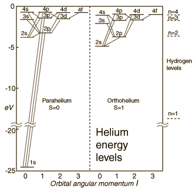

Atomic Energy Level Diagrams
Energy level diagrams can be useful for visualizing the complex level structure of multi-electron atoms. Forms of such diagrams are called Grotrian diagrams or term diagrams in various parts of the literature. While the energy level diagram of hydrogen with its single electron is straightforward, things become much more complicated with multi-electron atoms because of the interactions of the electrons with each other.
|

|
The electron energy levels for a helium atom demonstrate a number of features of multi-electron atoms. The labeling of the levels follows the spectroscopic notation.
|
|
Index
Atomic Structure Concepts |